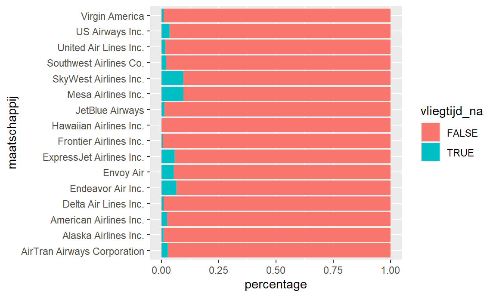
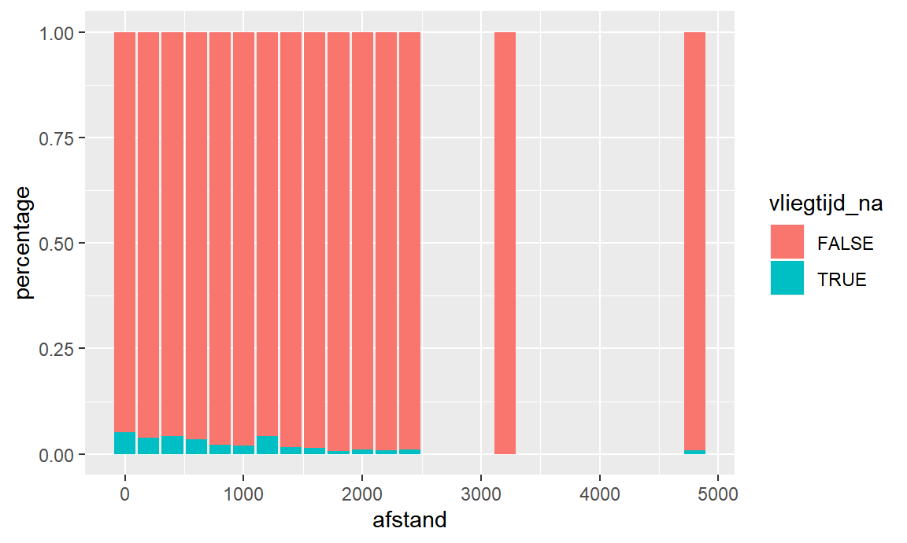
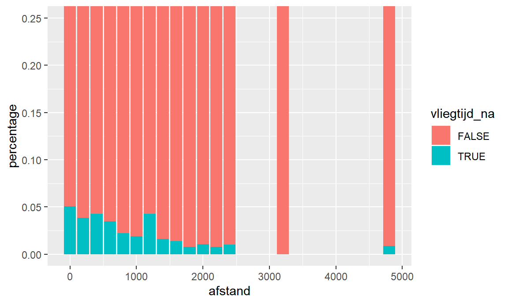
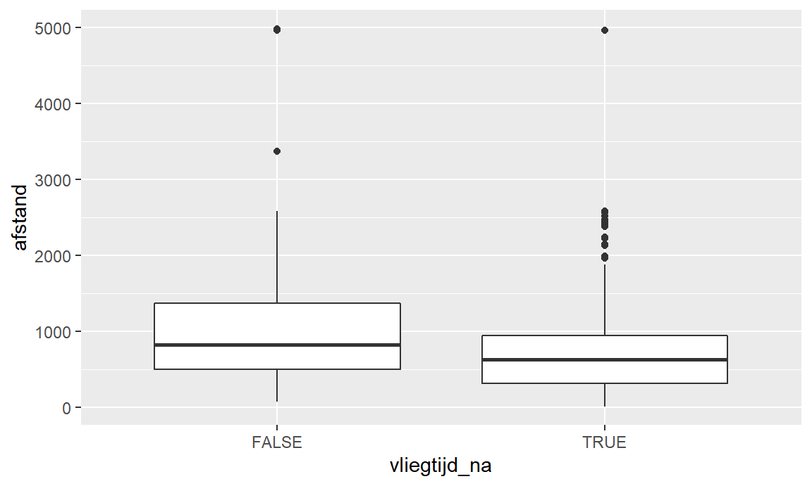
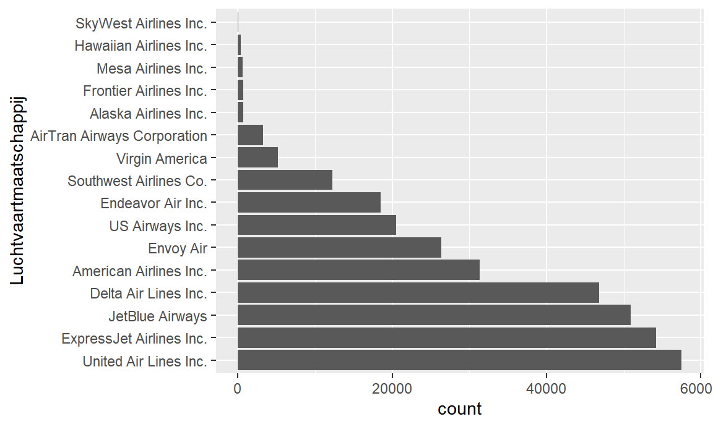
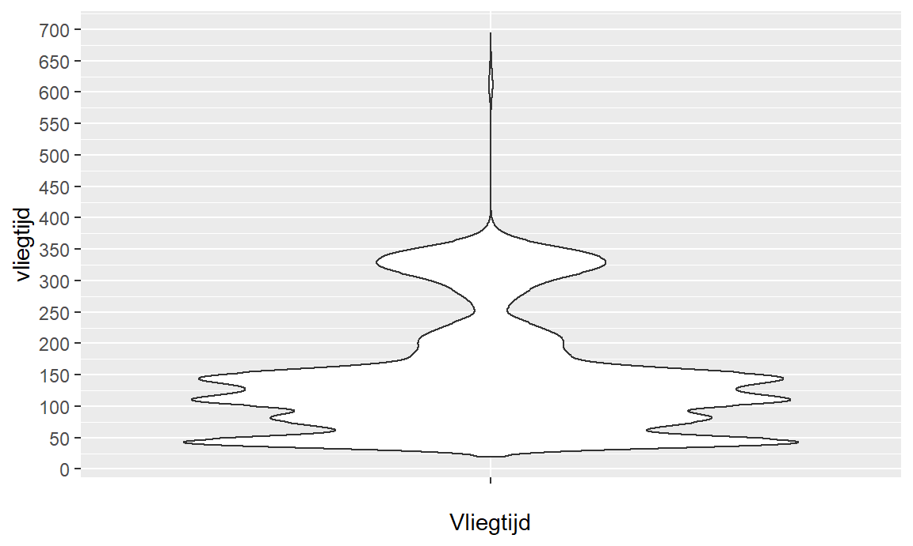
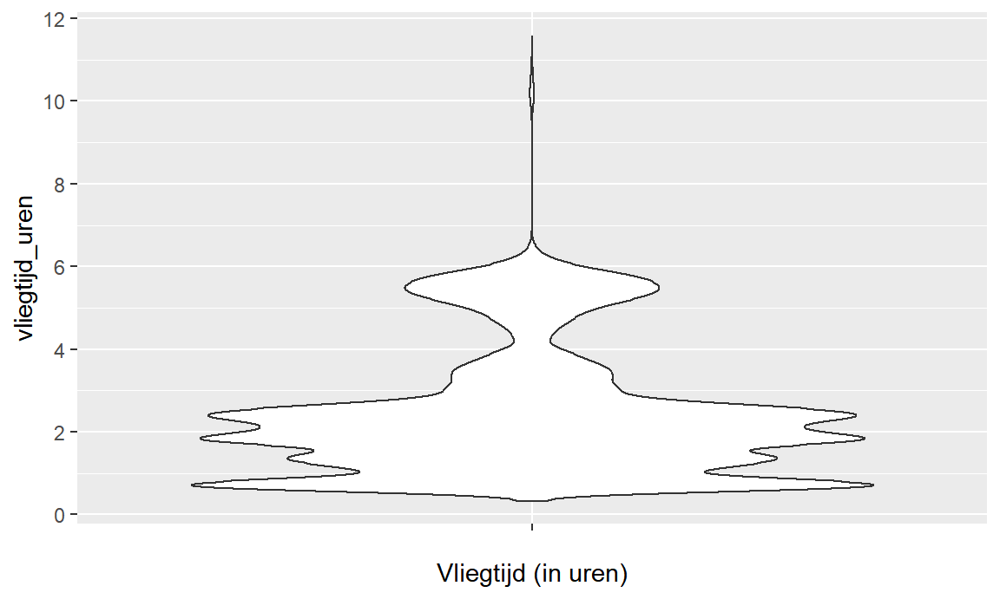
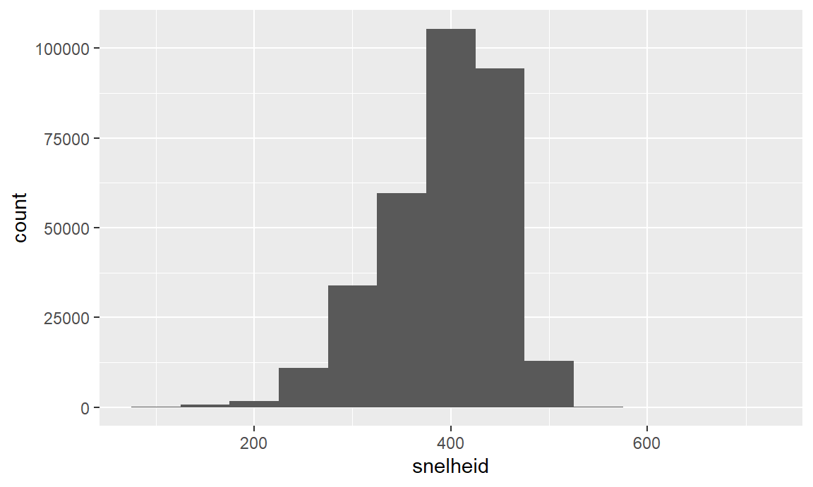

Chapter 7 Data voorbereiden
7.1 Beginnen bij het begin
- Alvorens we aan een exploratieve data analyse kunnen beginnen, moeten we eerst onze data voorbereiden.
- Er kunnen drie grote fases geïdentificeerd worden tijdens de datavoorbereiding.
- Correct inlezen van de data.
- Identificeren van problemen in de data en deze corrigeren van de data.
- Opwaarderen van de data.
- Data kan in diverse formaten aangeleverd worden en de eerste stap is ervoor zorgen dat de data ingeladen is in R. Hierbij zijn er twee specifieke elementen om aandacht aan te schenken:
- De data analist moet ervoor zorgen dat de data correct ingeladen wordt en dat de inhoud na het inladen overeenkomt met de inhoud toen deze data de laatste keer werd opgeslagen.
- De data analist moet ervoor zorgen dat de verschillende variabelen het juiste data type hebben.
- De volgende fase is het opkuisen van de data. Dit betekent dat men fouten gaat identificeren en deze ‘oplost’ alvorens verder te gaan.
- Er zijn verschillende soorten fouten die in de data kunnen sluipen. Enkele mogelijke fouten zijn:
- Sommige waarden ontbreken (geen waarde voor bepaalde variabele bij bepaalde observaties).
- Sommige waarden zijn fout. Bijvoorbeeld: voor een deel observaties is de afstand in km opgeslagen ipv mijl of is er een typfout in de waarde van een categorische variabele.
- Sommige observaties staan meerdere keren in de dataset.
- Het opkuisen van data gebeurt in principe in 2 stappen:
- Eerst moeten we de data bestuderen en fouten identificeren.
- Vervolgens moeten we de fouten in de data ‘corrigeren’ (indien mogelijk).
- Er zijn verschillende soorten fouten die in de data kunnen sluipen. Enkele mogelijke fouten zijn:
- Het opwaarderen van de data betreft een reeks transformaties met als doel de data bruikbaarder te maken voor exploratieve data analyse. Er zijn verschillende manieren om dit te bereiken:
- Bestaande variabelen transformeren naar nieuwe variabelen die geschikter zijn om patronen in de data bloot te leggen. Bijvoorbeeld het transformeren van een continue variabele naar een categorische variabele of het creëren van een nieuwe variabele ‘gemiddelde snelheid’ op basis van de variabelen ‘reistijd’ en ‘totaal afgelegde afstand’.
- Het opsplitsen van de dataset in meerdere datasets die apart bestudeerd worden. Dit is vooral zinvol indien de dataset verschillende soorten observaties bevat of een deel observaties met uitzonderlijke waarden.
7.2 Data inlezen
7.2.1 Uitdagingen bij het correct inlezen van data
- Data kan in verschillende formaten aangeleverd worden. Afhankelijk van het formaat, zal je andere functies moeten gebruiken om de data correct in te lezen
- Maar zelfs als je de juiste functie gebruikt, kan het inlezen fout gaan omdat een computer data altijd als een reeks van 1 en 0’en opslaat en er daarom een soort vertaalsleutel nodig is van 1 en 0’en naar leesbare tekst. Deze vertaalslag wordt gerealiseerd door encoderingschema’s en je moet er voor zorgen dat bij het inlezen van data je het juiste encoderingschema hanteert.
- Eenmaal de data is ingeladen, moet je er voor zorgen dat R de datatypes juist identificeert. De meeste dataformaten houden geen informatie bij van welk datatype een specifieke variabele is en dus moet R dit ‘raden’. Omdat dit wel eens fout kan gaan, moet je als analist dit controleren en corrigeren waar nodig.
7.2.2 Dataformaten
7.2.2.1 Flat-file databestanden
- Lees de bron over delimited en fixed-width bestanden.
- Flat-file databestanden bevatten data die in een tabelvorm passen:
- Iedere rij is een observatie.
- Iedere kolom stelt een variabele voor.
- Alle items in een kolom zijn van dezelfde soort.
- Cellen van de tabel bevatten enkelvoudige gegevens (dus niet een kolom hobby’s met hierin meerdere hobby’s in 1 cel).
- De volgorde van de kolommen is niet van belang.
- De volgorde van de rijen is niet belang.
- Volgende data kan dus in een flat-file bestand opgeslagen worden:
| naam | voornaam |
|---|---|
| Nelissen | Rob |
| Franssen | Ann |
- De twee meest gebruikte formaten voor flat-file databestanden zijn delimited en fixed-width bestanden.
- Een delimited bestand (vaak ook wel csv-bestand of comma-separated values bestand genoemd):
- gebruikt voor iedere rij een nieuwe regel,
- splitst de kolommen op met behulp van een specifiek splitsingsteken (vaak de komma of de puntkomma),
- kan het begin en het einde van een karakterstring met behulp van een specifiek quote-teken (vaak ’ of ") aanduiden.
- Bovenstaande tabel kan als een delimited databestand opgeslagen worden en ziet er dan als volgt uit:
naam;voornaam
Nelissen;Rob
Franssen;Ann- Een fixed-width bestand gebruikt eveneens een aparte regel per rij, maar gebruikt een vast aantal karakters per kolom en heeft dus geen splitsingsteken, noch quote-teken nodig.
- Bovenstaande tabel kan als een fixed-width databestand opgeslagen worden en ziet er dan als volgt uit:
naam voornaam
Nelissen Rob
Franssen Ann- Het nadeel van een delimited bestand is dat je het splitsings- en quote-teken niet kunt gebruiken in je data.
- Het voordeel van een delimited bestand is dat een veld niet meer ruimte in beslag neemt dan nodig.
- Bestudeer hoofdstuk Data Import van het boek ‘R for Data Science’ om te weten hoe je in R data uit flat-file bestanden kunt inlezen.
7.2.2.2 Hiërarchische databestanden
- Het nadeel van flat-file data bestanden is dat de data in een tabelvorm moet passen.
- Indien data een complexere (vaak hiërarchische) structuur heeft, dan is dit niet evident om correct in een tabelvorm te gieten.
- Je hebt bijvoorbeeld data over de studenten en van iedere student heb je naamgegevens en de resultaten van de verschillende afgelegde vakken.
- Het aantal afgelegde vakken verschilt echter van student tot student.
- Ook per student kan het aantal opgenomen kansen per vak verschillen van vak tot vak.
- Het aantal scores per student kan hierdoor sterk variëren.
- Voor hiërarchische databestanden wordt daarom vaak gebruikt gemaakt van XML-bestanden of JSON-bestanden.
- XML- en JSON-bestanden zijn ook zeer populair om gegevens via het web uit te wisselen.
7.2.2.2.1 XML-bestanden
- Bestudeer de bron over XML (tot en met XML attributes) om te begrijpen hoe een XML-bestand is opgebouwd.
- Een XML-bestand bestaat uit XML-elementen.
- De naam van het XML-element wordt bepaald door het openings- en sluitingslabel.
- Het openingslabel volgt het formaat
<element-naam>. - Het sluitingslabel heeft dezelfde naam en volgt het formaat
</element-naam>. - Tussen het openings- en sluitingslabel plaatsen we de inhoud van het XML-element.
- Voorbeeld:
<student>Rob Nelissen</student>.- Hier wordt het XML-element student gedefinieerd.
- De inhoud van dit XML-element is Rob Nelissen.
- De inhoud van een XML-element kan ook bestaan uit andere XML-elementen. Op deze manier kan je volledige tabellen in XML opslaan. Onderstaande voorbeeld is de vertaling van voorgaande data in tabelvorm naar XML.
- Voorbeeld:
<studenten>
<student>
<naam>Nelissen</naam>
<voornaam>Rob</naam>
</student>
<student>
<naam>Franssen</naam>
<voornaam>Ann</voornaam>
</student>
</studenten>- Zoals blijkt uit de vergelijking tussen de XML-representatie en voorgaande flat-file representaties, bevat een XML-bestand redelijk veel overhead om tabelvorm-data op te slaan.
- De kracht van XML ten opzichte van de flat-file bestanden is echter dat je veel complexere datastructuren kunt opslaan. Onderstaand voorbeeld opslaan in een tabelvorm (en dus flat-files) is allesbehalve evident.
- Voorbeeld:
<studenten>
<student>
<naam>Nelissen</naam>
<voornaam>Rob</naam>
<vakken>
<vak>
<naam>Exploratieve en Descriptieve Data Analyse</naam>
<academiejaar>20162017</academiejaar>
<score_kans1>8</score_kans1>
<score_kans2>12</score_kans2>
</vak>
<vak>
<naam>Macro-economie</naam>
<academiejaar>20152016</academiejaar>
<score_kans1>8</score_kans1>
<score_kans2>7</score_kans2>
</vak>
<vak>
<naam>Macro-economie</naam>
<academiejaar>20162017</academiejaar>
<score_kans1>14</score_kans1>
</vak>
...
</vakken>
</student>
<student>
<naam>Franssen</naam>
<voornaam>Ann</voornaam>
<vakken>
<vak>
<naam>Exploratieve en Descriptieve Data Analyse</naam>
<academiejaar>20162017</academiejaar>
<score_kans1>15</score_kans1>
</vak>
<vak>
<naam>Macro-economie</naam>
<academiejaar>20162017</academiejaar>
<score_kans1>16</score_kans1>
</vak>
...
</vakken>
</student>
...
</studenten>7.2.2.2.2 JSON-bestanden
- Bestudeer de JSON Tutorial om te begrijpen hoe een JSON-bestand is opgebouwd.
- JSON is een ander formaat dat steeds populairder wordt om hiërarchische data op te slaan en uit te wisselen.
- In vergelijking met XML is JSON korter en eenvoudiger te lezen.
- Een JSON-bestand bestaat voornamelijk uit JSON-objecten en JSON-lijsten.
- JSON-objecten komen typisch overeen met een observatie (rij) in een dataset.
- Een JSON-object wordt omsloten door accolades.
- De inhoud van een JSON-object bestaat uit key-value paren.
- De key-value paren zijn van elkaar gescheiden door middel van een komma.
- De key is een string omsloten door dubbele aanhalingstekens en geeft aan wat de value voorstelt.
- Key en value zijn van elkaar gescheiden door middel van een dubbelpunt.
- Voorbeelden van een JSON-object dat de student Rob Nelissen voorstelt:
{"naam":"Nelissen", "voornaam":"Rob"}
- Een JSON-lijst (array genoemd) bestaat uit een lijst van waarden gescheiden door een komma en omgeven door rechte haakjes.
- De waarden van de verschillende elementen in een JSON-lijst moeten van hetzelfde type zijn.
- Toegelaten waarden zijn o.a. strings, getallen, objecten, andere arrays (lijsten).
- Indien je data in tabelvorm wenst voor te stellen, zal je iedere rij als een JSON-object voorstellen en de volledige tabel als een lijst van deze JSON-objecten.
- Onderstaand voorbeeld is de vertaling van voorgaande studentendata in tabelvorm naar JSON.
- Net als bij XML kan je met JSON complexe datastructuren voorstellen.
- Voorbeeld:
[
{"naam":"Nelissen",
"voornaam": "Rob",
"vakken":
[
{"naam":"Exploratieve en Descriptieve Data Analyse",
"academiejaar":"20162017",
"score_kans1":8,
"score_kans2":12
},
{"naam":"Macro-economie",
"academiejaar":"20152016",
"score_kans1":8,
"score_kans2":7
},
{"naam":"Macro-economie",
"academiejaar":"20162017",
"score_kans1":14
}
]
},
{"naam":"Franssen",
"voornaam": "Ann",
"vakken":
[
{"naam":"Exploratieve en Descriptieve Data Analyse",
"academiejaar":"20162017",
"score_kans1":15
},
{"naam":"Macro-economie",
"academiejaar":"20162017",
"score_kans1":16
}
]
}
]7.2.2.3 Applicatie-specifieke dataformaten
- Naast deze standaard dataformaten, waarbij data als tekstbestanden worden opgeslagen, bestaan er verschillende applicatie-specifieke dataformaten.
- Het voordeel van applicatie-specifieke dataformaten is dat deze extra informatie over de data kunnen opslaan die specifiek is voor de applicatie.
- Zo zal een Excel databestand ook informatie bevatten over de formules en opmaak van de data (vet, cursief, …).
- Het nadeel van deze applicatie-specifieke dataformaten is dat ze niet altijd leesbaar zijn door andere applicaties.
7.2.2.4 R-packages voor het inladen van diverse dataformaten
- Standaard R heeft een aantal functies om delimited bestanden in te lezen, namelijk read.csv() en read.csv2(). Het verschil tussen beide functies heeft betrekking op de standaardwaardes voor specifieke parameters, zoals welk teken als delimiter gebruikt wordt (read.csv veronderstelt het komma-teken als delimiter, terwijl read.csv2 er van uitgaat dat de puntkomma gebruikt wordt om waardes van elkaar te scheiden).
- Er is ook het R pacakge ‘readr’ dat ook twee soortgelijke functies aanbiedt - read_csv() en read_csv2() - die performanter zijn dan de standaardfuncties.
- Om xml-bestanden in te lezen, wordt typisch het R package ‘xml’ gebruikt. Voor JSON-bestanden kan gebruik gemaakt worden van de packages ‘rjson’ of ‘jsonlite’.
- Voor een aantal applicatie-specifieke formaten zijn ondertussen ook al R-packages ontwikkeld. Zo is er bijvoorbeeld het R-package ‘readxl’ dat het inladen van Excel bestanden relatief eenvoudig maakt.
7.2.3 Data-encodering
7.2.3.1 Binair, decimaal en hexadecimaal rekenstelsel
- Een computer kan slechts 2 waarden opslaan, typisch voorgesteld als 0 en 1.
- Iedere opslaglocatie op een computer kan dus slechts 2 verschillende waarden opslaan en wordt een bit genoemd.
- De afkorting van bit is de kleine letter ‘b’.
- Een rekenstelsel waarbij iedere locatie slechts 2 waarden kan voorstellen noemen we een binair rekenstelsel.
- Indien we 2 opslaglocaties (2 bits) gebruiken, kunnen we 4 verschillende waarden opslaan: 00, 01, 10 en 11.
- Indien we 3 bits gebruiken zijn er 8 mogelijke waarden, bij 4 bits zijn er 16 mogelijke waarden.
- Het aantal waarden dat men met \(n\) bits kan opslaan is gelijk aan \(2^n\).
- Merk op dat in het rekenstelsel dat door mensen gebruikt wordt iedere opslaglocatie 10 verschillende waarden gebruikt kunnen worden (0, 1, 2, 3, 4, 5, 6, 7, 8, 9).
- Dit noemen we het decimaal rekenstelsel.
- Met 2 opslaglocaties kunnen we in het decimaal rekenstelsel 100 (= \(10^2\)) waarden opslaan: van 00 tot 99.
- Een ander rekenstelsel dat vaak gebruikt wordt binnen computerwetenschappen is het hexadecimaal rekenstelsel.
- In dit rekenstelsel kan iedere opslaglocatie 16 waardes opslaan, nl. 0, 1, 2, 3, 4, 5, 6, 7, 8, 9, A, B, C, D, E en F.
- Het hexadecimaal rekenstelsel is interessant omdat 1 locatie overeenstemt met 4 bit (4 locaties in het binair rekenstelsel).
- Om in computerprogramma’s aan te geven dat iets voorgesteld wordt in het hexadecimaal stelsel, laten we het voorafgaan door een 0x. Om aan te geven dat iets voorgesteld wordt in het binair stelsel, gebruiken we prefix 0b. Zonder prefix verwijzen we typisch naar het decimaal rekenstelsel.
| decimaal | hexadecimaal | binair |
|---|---|---|
| 0 | 0x0 | 0b0000 |
| 1 | 0x1 | 0b0001 |
| 2 | 0x2 | 0b0010 |
| 3 | 0x3 | 0b0011 |
| 4 | 0x4 | 0b0100 |
| 5 | 0x5 | 0b0101 |
| 6 | 0x6 | 0b0110 |
| 7 | 0x7 | 0b0111 |
| 8 | 0x8 | 0b1000 |
| 9 | 0x9 | 0b1001 |
| 10 | 0xA | 0b1010 |
| 11 | 0xB | 0b1011 |
| 12 | 0xC | 0b1100 |
| 13 | 0xD | 0b1101 |
| 14 | 0xE | 0b1110 |
| 15 | 0xF | 0b1111 |
Tabel: conversietabel decimaal, hexadecimaal en binair.
- 8 bits worden ook een byte genoemd wat afgekort wordt met de hoofdletter B. 1B bestaat dus uit 8b en kan dus 256 (\(=2^8\)) waarden opslaan.
7.2.3.2 Tekst opslaan
- Bestudeer de bron over Encoding tot sectie ‘Encodings en PHP’.
- Lees de bron over de geschiedenis van ASCII (enkel sectie ‘A Historical Perspective’).
- Aangezien computers enkel bits kunnen opslaan, hebben we een conversieschema nodig om tekst op te slaan. Ieder letterteken zal moeten omgezet worden naar een string van bits. Dit conversieschema wordt een ‘encoding scheme’ of encoderingsschema genoemd.
- Ieder encoderingsschema voorziet de vertaling van een specifieke set van karakters naar bijhorende bitstrings. Deze sets van karakters noemen we ‘character sets’ of karaktersets.
- Er bestaan zeer veel encoderingsschema’s.
- ASCII is een van de oudste encoderingsschema’s en is voornamelijk bruikbaar voor Engelstalige tekst.
- De ASCII karakterset bestaat uit 128 lettertekens en bevat o.a. de cijfers 0 tot 9, de letters a-z en A-Z.
- ASCII gebruikt 1 byte per letterteken en kan dus in principe 256 verschillende lettertekens opslaan.
- Aangezien ASCII slechts een karakterset van 128 tekens heeft, gebruikt het dus slechts 7 bit van de beschikbare byte (\(2^7 = 128\)).
- Omdat de ASCII tekenset gemaakt was voor de Engelse taal ontbreken er verschillende tekens voor andere talen.
- De ANSI-standaard nam de ASCII tekenset over, maar voegt hier vervolgens 128 tekens aan toe door de volledige byte te gebruiken.
- Met welke tekens de karaketerset wordt uitgebreid ligt echter niet vast binnen de ANSI-standaard, maar is afhankelijk van de gekozen codepage (of karakterset).
- Er bestaan zeer veel ANSI codepages (die eigenlijk Windows codepages genoemd moeten worden). Voor de eerste 128 tekens maakt de specifieke codepage niet uit, maar voor de laatste 128 code pages is dit wel belangrijk.
- Voor talen waar 1 byte per letterteken onvoldoende is, werden dan weer nieuwe encoderingsschema’s gebruikt die 2 bytes gebruiken en zo 65536 lettertekens kunnen voorstellen.
- Unicode is een poging om tot 1 karakterset te komen voor alle tekens die gebruikt worden in tekst.
- Unicode is een standaard en definieert zelf geen encodering. Ze vertaalt dus zelf geen lettertekens naar bitstrings.
- Unicode legt wel codepoints vast, wat een mapping is tussen lettertekens en een hexadecimaal getal. Zo is de letter ‘A’ gekoppeld aan het codepoint 0x0041.
- Het Unicode systeem bevat in totaal meer dan 1 miljoen codepoints en omvat niet enkel cijfers en letters, maar ook emoji’s. Zo heeft de ‘lachend gezicht’-emoji codepoint 0x1F642.
- De feitelijke omzetting van de codepoints naar een bitstring gebeurt door een specifieke encodering, waarbij UTF-8 de meest voorkomende is.
- ASCII is een van de oudste encoderingsschema’s en is voornamelijk bruikbaar voor Engelstalige tekst.
- Het gevolg is dat we een grote waaier aan encoderingsschema’s hebben.
- Als je dus een tekst opslaat volgens het ene encoderingsschema en vervolgens terug inleest volgens een ander encoderingsschema, dan kan het zijn dat delen van de tekst geen steek meer houden.
- Als je bijvoorbeeld de letter ‘ï’ opslaat volgens de Windows-1252 codepage dan zal dit binair als 11101111 opgeslagen worden (0xEF). Als je deze reeks van 8 bits echter later weer inleest volgens de Windows-1257 (Windows-Baltic), dan zal de binaire reeks 11101111 geïnterpreteerd worden als ‘ļ’.
- Het R-package ‘readr’ gaat er van uit dat tekst geëncodeerd is in UTF-8.
7.2.4 Datatypes controlleren en corrigeren
- We zullen de datavoorbereidingsfase illustreren aan de hand van de vluchtgegevens van de drie luchthavens in New York City.
- Voor we kunnen beginnen is het altijd verstandig een snel overzicht te maken van de dataset, zodat we weten welke variabelen we voor handen hebben alsook hun datatypes.
- Met de glimpse functie krijg je snel een overzicht van de verschillende variabelen en van welk type ze zijn.
## Observations: 329,174
## Variables: 7
## $ luchthaven <fct> EWR, LGA, JFK, LGA, EWR, EWR, LGA, JFK, LGA, JF...
## $ maatschappij <fct> United Air Lines Inc., United Air Lines Inc., A...
## $ vertrek_vertraging <dbl> 2, 4, 2, -6, -4, -5, -3, -3, -2, -2, -2, -2, -2...
## $ aankomst_vertraging <dbl> 11, 20, 33, -25, 12, 19, -14, -8, 8, -2, -3, 7,...
## $ afstand <chr> "1400", "1416", "1089", "762", "719", "1065", "...
## $ vliegtijd <dbl> 227, 227, 160, 116, 150, 158, 53, 140, 138, 149...
## $ vluchttype <ord> normaal, normaal, kort, kort, kort, kort, kort,...- Deze output bevat al een opmerkelijk resultaat. Zo zien we dat de variabele ‘afstand’ als tekst is opgeslagen in plaats van als een continue (numerieke) variabele.
- Soms gebeurt het dat R niet het juiste variabeletype herkent. Zo kan het zijn dat een categorische variabele als numerieke variabele wordt beschouwd omdat de categorieën gehele getallen zijn (vb. aantal cylinders: 4, 6 of 8).
- In onze dataset hebben we opgemerkt dat de variabele ‘afstand’ niet als numerieke variabele wordt geïnterpreteerd, maar als een ‘tekst’-variabele. Dit kan verschillende oorzaken hebben.
- Zo kan het zijn dat er voor 1 van de observaties een waarde geregistreerd is met een niet-numeriek teken (vb. 1OO ipv 100). In dat geval zal je eerst deze waarden moeten corrigeren naar de juiste waarde.
- Een andere vaak voorkomende oorzaak is dat R een punt als decimaalteken verwacht, terwijl dat een komma is in de dataset. Dit valt vaak op te lossen door de data met andere opties in te lezen in R.
- Indien de fouten zijn gecorrigeerd, dan moeten we nog altijd de data omzetten van een ‘tekst’-variabele naar een numerieke variabele (in ons geval). Dit doen we door middel van de ‘mutate’-functie en de ‘as.numeric’-functie.
- Merk op dat als er toch nog een waarde aanwezig is die niet kan omgezet worden naar het nieuwe variabeletype, R een waarschuwing zal geven en de waarde zal vervangen door ‘NA’. In dat geval ga je eerst moeten zoeken naar de oorzaak van de waarschuwing, deze aanpakken en dan de variabele transformeren naar het nieuwe type.
- De belangrijkste datatypes in R en de bijhorende transformatiefuncties zijn:
- numeric (decimale getallen) - as.numeric()
- integer (gehele getallen) - as.integer()
- character (tekst) - as.character()
- factor (nominale variabele) - as.factor()
- ordered factor (ordinale variabele) - as.ordered()
7.3 Dataproblemen identificeren en corrigeren
7.3.1 Overzicht
- We onderscheiden drie soorten problemen die kunnen opduiken met data en die best op voorhand gecorrigeerd worden:
- Foutieve waarden.
- Ontbrekende waarden.
- Inconsistente waarden.
7.3.2 Foutieve waarden
7.3.2.1 Categorische variabele
- Coderingsfouten bij categorische variabelen uiten zich typisch in redundante categorielabels. Dit zijn labels met een typfout die door R als een aparte categorie worden beschouwd, maar dit niet zijn.
- Om dit soort coderingsfouten te detecteren, moet je de verschillende labels van een categorische variabele bestuderen.
- Omdat deze foute categorielabels meestal uitzonderlijk zijn, kan je best de verschillende categorielabels bekijken volgens stijgende frequentie.
- Een andere aanpak is de categorielabels alfabetisch te ordenen.
- Eenmaal men deze coderingsfouten gedetecteerd heeft, kan men ze manueel corrigeren door gebruik te maken van de functies mutate (dplyr) en fct_recode (forcats).
Case: Vluchtdata NYC
- Als we de categorische variabele maatschappij analyseren op foutieve labels dan zien we dat 1 vlucht foutief het label ‘XpressJet Airlines Inc.’ heeft gekregen in plaats van ‘ExpressJet Airlines Inc.’.
| maatschappij | n |
|---|---|
| XpressJet Airlines Inc. | 1 |
| Envoi Air | 19 |
| SkyWest Airlines Inc. | 32 |
| Hawaiian Airlines Inc. | 342 |
| Mesa Airlines Inc. | 601 |
| Frontier Airlines Inc. | 685 |
| Alaska Airlines Inc. | 714 |
| AirTran Airways Corporation | 3260 |
| Virgin America | 5162 |
| Southwest Airlines Co. | 12275 |
| Endeavor Air Inc. | 18460 |
| US Airways Inc. | 20536 |
| Envoy Air | 26378 |
| American Airlines Inc. | 31327 |
| Delta Air Lines Inc. | 46779 |
| JetBlue Airways | 50940 |
| ExpressJet Airlines Inc. | 54172 |
| United Air Lines Inc. | 57491 |
- Indien we de labels van de categorische variabele maatschappij alfabetisch ordenen dan zien we ook dat er een aantal vluchten foutief gecodeerd zijn als ‘Envoi Air’ in plaats van ‘Envoy Air’.
| maatschappij | n |
|---|---|
| AirTran Airways Corporation | 3260 |
| Alaska Airlines Inc. | 714 |
| American Airlines Inc. | 31327 |
| Delta Air Lines Inc. | 46779 |
| Endeavor Air Inc. | 18460 |
| Envoi Air | 19 |
| Envoy Air | 26378 |
| ExpressJet Airlines Inc. | 54172 |
| Frontier Airlines Inc. | 685 |
| Hawaiian Airlines Inc. | 342 |
| JetBlue Airways | 50940 |
| Mesa Airlines Inc. | 601 |
| SkyWest Airlines Inc. | 32 |
| Southwest Airlines Co. | 12275 |
| United Air Lines Inc. | 57491 |
| US Airways Inc. | 20536 |
| Virgin America | 5162 |
| XpressJet Airlines Inc. | 1 |
- We kunnen deze foutieve labels corrigeren met behulp van de functie fct_recode uit het forcats package.
7.3.2.2 Ordinale variabelen
- Bij ordinale variabelen kunnen dezelfde coderingsfouten voorkomen als bij categorische variabelen. Deze worden op dezelfde manier gedetecteerd en gecorrigeerd.
- Er is echter nog een bijkomende coderingsfout voor ordinale variabelen, namelijk wanneer de voorgedefinieerde volgorde tussen de labels fout is.
- Om dit te detecteren, moet je de verschillende labels (‘levels’) opvragen met behulp van de unique-functie.
- Indien we de ordinale variabele vluchttype analyseren dan zien we dat de voorgedefinieerde volgorde van de labels foutief is.
## [1] normaal kort lang intercontinentaal
## Levels: lang < kort < normaal < intercontinentaal- We kunnen de volgorde tussen de labels van een ordinale variabele corrigeren met behulp van de functies mutate (dplyr) en fct_relevel (forcats).
df %>%
mutate(vluchttype = fct_relevel(df$vluchttype, "lang", after = 2)) -> df
unique(df$vluchttype)## [1] normaal kort lang intercontinentaal
## Levels: kort < normaal < lang < intercontinentaal7.3.2.3 Continue variabelen
- Foutieve waarden bij een continue variabelen detecteren is een stuk moeilijker omdat een foutieve waarde nog steeds een geldige waarde kan zijn (nog steeds een getal).
- Ook de aanpak om naar weinig voorkomende waarden te kijken, zoals bij categorische variabelen, werkt niet goed omdat bij een continue variabele vaak veel waarden zijn zeer weinig voorkomen.
- De meest voor de hand liggende aanpak is de waarden te bestuderen die opmerkelijk hoog of laag zijn in vergelijking met de andere waarden van de variabele.
- Het is belangrijk te beseffen dat niet iedere extreme waarde per definitie een foutieve waarde is. Uitzonderlijk hoge of lage waardes zijn natuurlijk altijd mogelijk.
- Daarom moet men altijd voorzichtig te werk gaan bij het bepalen of iets een foutieve waarde is (meetfout, ingavefout) of een uitzonderlijke doch correcte waarde. Domeinkennis kan hierbij helpen.
- Indien je door te kijken naar de uiterste waarden mogelijke problemen hebt gedetecteerd, moet je deze observaties van nabij bestuderen om te achterhalen of het meetfouten kunnen zijn of niet. Ga hiervoor steeds naar de volledige observatie kijken en niet enkel naar de waarde voor de continue variabele.
- Een andere manier om te detecteren of een continue variabele uitzonderlijke waarden bevat, is door middel van een boxplot. Uitzonderlijk grote/kleine waarden vallen buiten de ‘whiskers’ en worden door punten aangeduid in een boxplot. Let wel op, de filosofie achter uitzonderlijke waarden is gebaseerd op een normale verdeling van de data. Indien de data werkelijk normaal verdeeld is, dan is de kans op een uitzonderlijke waarde slechts 0.7%. Dit betekent echter dat men best op voorhand het histogram bekijkt om te controleren of de data enigszins normaal verdeeld is, alvorens de boxplot te hanteren.
- Bij foutieve waarden van een continue variabele is het vaak niet mogelijk om de correcte waarde af te leiden (zoals bij een categorische variabele). Daarom is de enige juiste correctie deze foutieve waarden te vervangen met “missing values”.
- We zullen de variabele vliegtijd analyseren op foutieve waarden.
- We zullen eerst de kleinste waarden bestuderen. Hiervoor selecteren we de 10 vluchten met de kortste vliegtijd en rangschikken deze volgens stijgende vliegtijd. We kijken hierbij niet alleen naar de vliegtijd, maar ook naar de luchthaven, de maatschappij en de afgelegde afstand.
df %>%
arrange(vliegtijd) %>%
select(luchthaven, maatschappij, afstand, vliegtijd) %>%
filter(row_number()<11)| luchthaven | maatschappij | afstand | vliegtijd |
|---|---|---|---|
| JFK | Endeavor Air Inc. | 94 | 0.5833333 |
| EWR | JetBlue Airways | 1065 | 2.7666667 |
| JFK | Delta Air Lines Inc. | 2248 | 5.1500000 |
| EWR | ExpressJet Airlines Inc. | 116 | 20.0000000 |
| EWR | ExpressJet Airlines Inc. | 116 | 20.0000000 |
| EWR | ExpressJet Airlines Inc. | 116 | 21.0000000 |
| EWR | ExpressJet Airlines Inc. | 80 | 21.0000000 |
| EWR | ExpressJet Airlines Inc. | 116 | 21.0000000 |
| EWR | ExpressJet Airlines Inc. | 80 | 21.0000000 |
| LGA | US Airways Inc. | 184 | 21.0000000 |
- Deze analyse doet vermoeden dat de eerste drie vluchten waarschijnlijk meetfouten zijn. Het betreffen hier drie vluchten van minder dan 6 minuten wat zeer onwaarschijnlijk is, zeker wanneer we we zien dat de tweede en derde vlucht lange vluchten zijn.
- De overige vluchten zijn vluchten van 20 minuten of meer, maar aangezien het hier om korte vluchten gaan is dit mogelijk correct. We zullen enkel de eerste drie observaties (met een vliegtijd kleiner dan 6) als foutief beschouwen.
- We bestuderen vervolgens de vluchten met de grootste vliegtijd.
df %>%
arrange(-vliegtijd) %>%
select(luchthaven, maatschappij, afstand, vliegtijd) %>%
filter(row_number()<11)| luchthaven | maatschappij | afstand | vliegtijd |
|---|---|---|---|
| EWR | United Air Lines Inc. | 4963 | 695 |
| JFK | Hawaiian Airlines Inc. | 4983 | 691 |
| JFK | Hawaiian Airlines Inc. | 4983 | 686 |
| JFK | Hawaiian Airlines Inc. | 4983 | 686 |
| JFK | Hawaiian Airlines Inc. | 4983 | 683 |
| JFK | Hawaiian Airlines Inc. | 4983 | 679 |
| EWR | United Air Lines Inc. | 4963 | 676 |
| JFK | Hawaiian Airlines Inc. | 4983 | 676 |
| JFK | Hawaiian Airlines Inc. | 4983 | 675 |
| EWR | United Air Lines Inc. | 4963 | 671 |
Deze resultaten doen vermoeden dat het hier NIET om meetfouten gaat. Het gaat hier immers om zeer verre vluchten en de maatschappijnaam doet vermoeden dat het hoofdzakelijk vluchten naar Hawaï zijn. We hebben daarom via Google opgezocht hoe lang een vlucht van New York naar Hawaï duurt en dit komt overeen met de vliegtijden van 11 tot 12u in deze dataset. Daarom besluiten we dat deze waarden geen foutieve waarden zijn.
Vervolgens zullen we voor de drie vluchten met een vliegtijd van minder dan 6 minuten de waarde van de vliegtijd vervangen door een ontbrekende waarde. In R wordt dit aangegeven door de waarde NA dat voor ‘not available’ staat.
df <- df %>%
mutate(vliegtijd = ifelse(vliegtijd<6,NA,vliegtijd))
df %>%
arrange(vliegtijd) %>%
select(luchthaven, maatschappij, afstand, vliegtijd) %>%
filter(row_number()<11)| luchthaven | maatschappij | afstand | vliegtijd |
|---|---|---|---|
| EWR | ExpressJet Airlines Inc. | 116 | 20 |
| EWR | ExpressJet Airlines Inc. | 116 | 20 |
| EWR | ExpressJet Airlines Inc. | 116 | 21 |
| EWR | ExpressJet Airlines Inc. | 80 | 21 |
| EWR | ExpressJet Airlines Inc. | 116 | 21 |
| EWR | ExpressJet Airlines Inc. | 80 | 21 |
| LGA | US Airways Inc. | 184 | 21 |
| JFK | Endeavor Air Inc. | 94 | 21 |
| EWR | ExpressJet Airlines Inc. | 116 | 21 |
| EWR | ExpressJet Airlines Inc. | 116 | 21 |
7.3.3 Ontbrekende waarden
- Soms gebeurt het dat voor bepaalde observaties waarden ontbreken voor een specifieke variabele. In zulke gevallen spreken we van ontbrekende waarden of missing values.
- Het detecteren van ontbrekende waarden is relatief eenvoudig, omdat deze normaal als NA gecodeerd zijn in een dataset (NA = ‘not available’).
- We kunnen onderscheid maken tussen drie soorten van ontbrekende waarden.
- Missing completely at random (MCAR): Indien het ontbreken van waarden voor een specifieke variabele volledig willekeurig is, dan spreekt men over MCAR.
- Missing at random (MAR): Indien het ontbreken van waarden voor variabele \(X_1\) niet willekeurig is, maar afhankelijk van de waarden van andere variabelen \(X_2\), \(X_3\), …, dan spreekt men over MAR.
- Not missing at random (NMAR): Indien het ontbreken van waarden voor variabele \(X_1\) niet willekeurig is, maar afhankelijk is van de waarde van \(X_1\) of van de waarden van ongeobserveerde variabelen, dan spreekt men over NMAR.
- Om te bepalen of data al dan niet MCAR is, moet men achterhalen of het ontbreken van waarden voor variabele \(X_1\) gecorreleerd is met de waarden van een andere variabele \(X_2\). Een mogelijkheid is om de dataset in twee te splitsen, i.e. alle observaties met een waarde voor \(X_1\) en alle observaties met een missing value voor \(X_1\). Vervolgens kijken we naar de verdeling van variabele \(X_2\). Indien deze hetzelfde is voor beide datasets, dan suggereert dit dat er geen relatie bestaat tussen de waarde van \(X_2\) en het al dan niet ontbreken van de waarde voor \(X_1\). Indien deze verdeling van \(X_2\) sterkt verschilt tussen beide datasets, dan is er mogelijk wel een relatie en dan is de data niet MCAR.
- Het soort ontbrekende waarde heeft belangrijke implicaties hoe je correct met ontbrekende waarden kan omgaan in het kader van confirmatorische data analyse. Zo zal het ‘weglaten’ van observaties met ontbrekende waarden enkel in het geval van MCAR geen vertekening geven in de resultaten van een confirmatorische data analyse.
- In het kader van een descriptieve of exploratieve data analyse, zijn de implicaties eerder beperkt, omdat men toch enkel uitspraken wenst te doen voor de beschikbare data.
- Wel kan het identificeren van het type ontbrekende waarden op zich interessante inzichten geven. Zo kan het het patroon dat het jaarsalaris voornamelijk ontbreekt bij mensen die hogere studies gevolgd hebben op zich ook interessant zijn voor verdere interpretatie.
- In descriptieve en exploratieve analyses zijn er 3 manieren om met ontbrekende waarden om te gaan:
- We verwijderen de variabele waarvoor we missing values hebben.
- We verwijderen de observaties met missing values.
- We beschouwen de missing values als een aparte waarde.
- Het verwijderen van de variabele zelf is een drastische maatregel. Dit betekent immers dat we de variabele volledig buiten beschouwing laten in onze analyse. Dit is vaak het laatste redmiddel en wordt enkel toegepast als er een te hoog percentage ontbrekende waarden is.
- Bij het verwijderen van observaties moet men met de nodige aandacht te werk gaan. Indien de ontbrekende waarden MAR zijn (en niet MCAR), dan gaat men mogelijk waardevolle patronen tussen andere variabelen ook verwijderen. Een mogelijke manier om dit te omzeilen is de observaties met ontbrekende waarden te negeren bij analyses van de variabelen waarvoor de waarden ontbreken. Dit zorgt ervoor dat deze observaties wel nog beschikbaar zijn voor de analyse van andere variabelen.
- Indien de data suggereert dat de ontbrekende waarden MCAR zijn, dan kan men overwegen deze observaties te verwijderen. Indien dit niet het geval is, dan is het beter deze NA-waarden als een aparte categorie te beschouwen.
- Omdat R de waarde ‘NA’ anders behandelt dan reguliere waarden, is het vaak aangeraden om deze waarde te transformeren (indien je de ontbrekende waarden als een aparte categorie wenst te beschouwen).
- In geval van een categorische variabele, kan je de ‘NA’ waarde transformeren naar een aparte categorie (vb ‘waarde ontbreekt’).
- In geval van een continue variabele, is het aangeraden een nieuwe categorische variabele aan te maken die aangeeft of er wel of niet een waarde aanwezig was voor de continue variabele.
- De eerste stap is na te gaan welke variabelen ontbrekende waarden hebben en hoe vaak deze variabelen ontbrekende waarden hebben. Dit functie summary() is hiervoor zeker nuttig.
## luchthaven maatschappij vertrek_vertraging
## EWR:119282 United Air Lines Inc. :57491 Min. : -43.00
## JFK:105230 ExpressJet Airlines Inc.:54173 1st Qu.: -5.00
## LGA:104662 JetBlue Airways :50940 Median : -2.00
## Delta Air Lines Inc. :46779 Mean : 12.71
## American Airlines Inc. :31327 3rd Qu.: 11.00
## Envoy Air :26397 Max. :1301.00
## (Other) :62067 NA's :8214
## aankomst_vertraging afstand vliegtijd vluchttype
## Min. : -86.000 Min. : 17 Min. : 20.0 kort :245666
## 1st Qu.: -17.000 1st Qu.: 502 1st Qu.: 81.0 normaal : 31813
## Median : -5.000 Median : 820 Median :127.0 lang : 50980
## Mean : 6.987 Mean :1027 Mean :149.6 intercontinentaal: 715
## 3rd Qu.: 14.000 3rd Qu.:1372 3rd Qu.:184.0
## Max. :1272.000 Max. :4983 Max. :695.0
## NA's :9365 NA's :9368- Uit deze analyse blijkt dat de variabelen vertrek_vertraging, aankomst_vertraging en vliegtijd last hebben van ontbrekende waarden.
- Om vervolgens te analyseren of deze ontbrekende waarden MCAR zijn of niet, zullen we voor ieder van de drie continue variabelen een nieuwe categorische variabele maken die aangeeft of de waarde ontbreekt of niet.
df <- df %>%
mutate(vertrek_vertraging_na = is.na(vertrek_vertraging),
aankomst_vertraging_na = is.na(aankomst_vertraging),
vliegtijd_na = is.na(vliegtijd))- Nu kunnen we met ggplot achterhalen of de andere variabelen zich ‘anders’ gedragen als er voor één van deze drie variabelen een waarde ontbreekt.
- We illustreren voor ‘afstand’ (continu) en voor ‘maatschappij’ (categorisch).
- Indien we dit bestuderen voor ‘maatschappij’ gaan we voor iedere maatschappij laten zien welk percentage cases een ontbrekende waarde voor vliegtijd heeft. Indien er geen verband is, dan zouden we geen grote verschillen mogen zien tussen de maatschappijen.
df %>%
group_by(maatschappij, vliegtijd_na) %>%
summarise(aantal = n())%>%
ungroup() %>%
group_by(maatschappij) %>%
mutate(totaal = sum(aantal), percentage = aantal/totaal) %>%
ggplot(aes(x=maatschappij, y=percentage)) +
coord_flip() +
geom_col(aes(fill=vliegtijd_na), position = "stack")
- Uit deze resultaten blijkt dat voor sommige maatschappijen een aanzienlijk hoger percentage ontbrekende waarden bij vliegtijd voorkomt (SkyWest, Mesa en ook ExpressJet, Envoy en Endeavor).
- We kunnen een soortgelijke analyse ook uitvoeren voor de variabele afstand. Hiervoor zullen we eerst de variabele afstand omvormen tot een categorische variabele.
binwidth <- 200
df %>%
mutate(afstand_cat = afstand %/% binwidth) %>%
group_by(afstand_cat, vliegtijd_na) %>%
summarise(aantal = n()) %>%
ungroup() %>%
group_by(afstand_cat) %>%
mutate(totaal = sum(aantal), rel_aantal = aantal/totaal) %>%
ggplot(aes(x=afstand_cat*binwidth, y=rel_aantal)) +
geom_col(aes(fill=vliegtijd_na), position = "stack") +
xlab("afstand")+
ylab("percentage")
- Deze resultaten lijken te suggereren dat naarmate de vlucht langer wordt, het percentage ontbrekende waarden bij vliegtijd afneemt (met een uitzonderlijke piek bij vluchten rond 1200 mijl).
- Omdat het percentage ontbrekende waarden eerder klein is, is het moeilijk om het patroon duidelijk te zien. We kunnen ook dezelfde plot maken, maar de y-as laten stoppen bij een waarde van 0.25. Op deze manier wordt het patroon duidelijker.
binwidth <- 200
df %>%
mutate(afstand_cat = afstand %/% binwidth) %>%
group_by(afstand_cat, vliegtijd_na) %>%
summarise(aantal = n()) %>%
ungroup() %>%
group_by(afstand_cat) %>%
mutate(totaal = sum(aantal), rel_aantal = aantal/totaal) %>%
ggplot(aes(x=afstand_cat*binwidth, y=rel_aantal)) +
geom_col(aes(fill=vliegtijd_na), position = "stack") +
xlab("afstand")+
ylab("percentage")+
coord_cartesian(ylim = c(0, 0.25))
- Tenslotte kunnen we ook nog op een andere manier het verband tussen de afstand en het voorkomen van ontbrekende waarden bij vliegtijd bestuderen, nl. via 2 boxplots.

- Hier zien we dat vluchten waarvoor de vliegtijd ontbreekt vaak kortere vluchten zijn dan waarvoor we de vliegtijd wel hebben. Dit komt overeen met de vorige bevinding.
- Op basis van deze resultaten kunnen we dus stellen dat het ontbreken van de vliegtijd niet willekeurig is, maar vaker voorkomt bij bepaalde maatschappijen en eerder bij kortere dan bij langere vluchten.
- We zouden nog verder kunnen onderzoeken of deze maatschappijen eerder langere of kortere vluchten organiseren.
- Soortgelijke analyses kunnen we ook uitvoeren voor de variabelen vertrek_vertraging en aankomst_vertraging.
7.3.4 Inconsistente waarden
- Data is inconsistent als het niet voldoet aan een aantal regels/beperkingen die horen te gelden op basis van domeinkennis.
- De vorm van inconsistenties waar we ons op focussen, betreft in-record inconsistenties. Dit zijn tegenstrijdigheden die aanwezig zijn binnen één enkele observatie. Enkele voorbeelden zijn:
- De gemiddelde snelheid van een vlucht ligt hoger dan de maximale theoretische snelheid van het vliegtuig.
- Het aankomsttijdstip van een vlucht vindt plaats voor het vertrektijdstip.
- De aankomsttijdstip komt niet overeen met het vertrektijdstip + vertrekvertraging + vluchtduur.
- Het identificeren van inconsistenties kan door middel van diverse dplyr-functies, waarbij je voor iedere observatie test of deze voldoen aan de opgelegde beperkingsregel.
- Daarnaast is er ook het editrules package dat nuttige functies aanbiedt om op een gestructureerdere manier consistentie te evalueren.
7.4 Data opwaarderen
- Van zodra de data geen foutieve en/of ontbrekende waarde meer bevat, kunnen we een aantal technieken toepassen om de data bruikbaarder te maken voor exploratieve analyses. We onderscheiden hierbij 2 technieken:
- Transformatie van bestaande variabelen.
- Selectie van observaties.
7.4.0.1 Categorische variabelen
- Soms is het beter om de categorieën van een categorische variabelen te wijzigen door sommige categorieën samen te nemen. Er zijn verschillende situaties waarbij dit het overwegen waard is, zoals:
- De labels van een categorische variabele is op een te gedetailleerd niveau gedefinieerd, met als gevolg dat de exploratieve analyse al snel complex wordt door de vele categorieën. In zulke gevallen kan het zinvol zijn om het aantal categorieën te verminderen door categorieën die inhoudelijk bij elkaar horen samen te nemen.
- Een categorische variabele bestaat uit een beperkt aantal categorieën met veel observaties en een groot aantal categorieën met zeer weinig observaties. In zulke gevallen kan het zinvol zijn om de categorieën met weinig observaties samen te nemen in 1 categorie “Overige”.
- Om te bepalen welke categorieën men kan samenvoegen, kan een frequentietabel of barplot gemaakt worden.
- Het herdefiniëren van de labels gebeurt vervolgens met de functie fct_recode (forcats). Hierbij heeft men steeds de keuze om de oorspronkelijke variabele te vervangen of een nieuwe variabele aan te maken.
- Laten we eens aan de hand van een barplot naar de variabele ‘luchtvaartmaatschappij’ kijken. We zien hierbij dat er relatief veel luchtvaartmaatschappijen (categorieën) in onze data zijn en dat er een aantal verwaarloosbaar weinig vluchten bevatten.
df %>%
ggplot(aes(x=fct_infreq(maatschappij))) +
geom_bar() +
coord_flip() +
xlab("Luchtvaartmaatschappij")
- We kunnen de exacte aantallen achterhalen met behulp van een frequentietabel.
| maatschappij | n |
|---|---|
| SkyWest Airlines Inc. | 32 |
| Hawaiian Airlines Inc. | 342 |
| Mesa Airlines Inc. | 601 |
| Frontier Airlines Inc. | 685 |
| Alaska Airlines Inc. | 714 |
| AirTran Airways Corporation | 3260 |
| Virgin America | 5162 |
| Southwest Airlines Co. | 12275 |
| Endeavor Air Inc. | 18460 |
| US Airways Inc. | 20536 |
| Envoy Air | 26397 |
| American Airlines Inc. | 31327 |
| Delta Air Lines Inc. | 46779 |
| JetBlue Airways | 50940 |
| ExpressJet Airlines Inc. | 54173 |
| United Air Lines Inc. | 57491 |
- Op basis van deze analyse beslissen we om de luchtvaartmaatschappijen met minder dan 10000 vluchten samen te voegen in een nieuwe categorie met het label “Overige”. We opteren ervoor de oorspronkelijke variabelen te vervangen.
- De nieuwe frequentietabel toont het resultaat.
| maatschappij | n |
|---|---|
| Overige | 10796 |
| Southwest Airlines Co. | 12275 |
| Endeavor Air Inc. | 18460 |
| US Airways Inc. | 20536 |
| Envoy Air | 26397 |
| American Airlines Inc. | 31327 |
| Delta Air Lines Inc. | 46779 |
| JetBlue Airways | 50940 |
| ExpressJet Airlines Inc. | 54173 |
| United Air Lines Inc. | 57491 |
7.4.0.2 Continue variabelen
- Bij continue variabelen zijn er verschillende transformaties die regelmatig uitgevoerd worden:
- De transformatie van een continue variabele naar een categorische variabele.
- Het herschalen van de continue variabele.
- De creatie van een nieuwe variabele op basis van bestaande continue variabelen.
- Ook hier hebben we weer steeds de mogelijkheid om de bestaande variabele te vervangen of een nieuwe variabele aan te maken.
- Laten we de variabele vliegtijd eens onder de loep nemen. We beginnen met een visuele analyse aan de hand van een violinplot.
df %>%
ggplot(aes(x="", y=vliegtijd)) +
geom_violin() +
xlab("Vliegtijd") +
scale_y_continuous(breaks=seq(0,800,50))
- Op basis van deze plot beslissen we een nieuwe categorische variabele “vliegtijd_fct” aan te maken, waarbij ‘kort’ overeenkomt met een vlucht die minder dan een uur duurt, ‘normaal’ overeenkomt met een vlucht tussen 1 en 4 uur (60-240) en ‘lang’ overeenkomt met een vlucht van meer dan 4 uur. Hiervoor maken we gebruik van de functie cut.
df %>%
mutate(vliegtijd_fct = cut(vliegtijd, c(-Inf,60,240,Inf),
labels=c('kort','normaal','lang'))) -> df- Aan de hand van een frequentietabel kunnen we nu het resultaat bekijken.
| vliegtijd_fct | n |
|---|---|
| kort | 53220 |
| normaal | 210758 |
| lang | 55828 |
| NA | 9368 |
- Vervolgens beslissen we een nieuwe variabele te maken die de vliegtijd uitdrukt in uren in plaats van minuten.
- We kunnen het resultaat bekijken met een violinplot.
df %>%
ggplot(aes(x="", y=vliegtijd_uren)) +
geom_violin() +
xlab("Vliegtijd (in uren)") +
scale_y_continuous(breaks=seq(0,12,2))
- Tenslotte maken we een nieuwe variabele die de gemiddelde snelheid van het vliegtuig uitdrukt door de afstand te delen door de vliegtijd.
- Laten we het resultaat aan de hand van een histogram bekijken.
df %>%
ggplot(aes(x=snelheid)) +
geom_histogram(binwidth = 50) +
scale_x_continuous(breaks = seq(0,3000, 200))
7.4.1 Sampling
- Soms is een dataset zo groot, dat analyses veel tijd in beslag nemen. In zulke gevallen kan het nuttig zijn om een random sample te nemen van de oorspronkelijke data om een eerste exploratieve analyse op uit te voeren.
- Zolang de sample willekeurig getrokken wordt en de nieuwe dataset niet te klein wordt, is de kans dat je patronen ontdekt in de sample die niet voorkomen in de volledige dataset eerder klein.
- Na een eerste exploratieve data analyse op de beperkte sample, kan men vervolgens gerichter de volledige dataset analyseren.
- Laten we een sample van 10000 vluchten nemen uit de oorspronkelijke dataset.
- We kunnen nu een eerste blik op deze sample werpen met behulp van de summary functie.
## luchthaven maatschappij vertrek_vertraging
## EWR:3589 United Air Lines Inc. :1723 Min. :-20.00
## JFK:3240 ExpressJet Airlines Inc.:1632 1st Qu.: -5.00
## LGA:3171 JetBlue Airways :1537 Median : -2.00
## Delta Air Lines Inc. :1471 Mean : 12.74
## American Airlines Inc. : 937 3rd Qu.: 11.00
## Envoy Air : 815 Max. :849.00
## (Other) :1885 NA's :265
## aankomst_vertraging afstand vliegtijd vluchttype
## Min. :-73.000 Min. : 80 Min. : 22.0 kort :7520
## 1st Qu.:-17.000 1st Qu.: 488 1st Qu.: 80.0 normaal : 913
## Median : -5.000 Median : 764 Median :126.0 lang :1549
## Mean : 7.181 Mean :1018 Mean :148.6 intercontinentaal: 18
## 3rd Qu.: 14.000 3rd Qu.:1183 3rd Qu.:181.0
## Max. :847.000 Max. :4983 Max. :653.0
## NA's :298 NA's :299
## vertrek_vertraging_na aankomst_vertraging_na vliegtijd_na vliegtijd_fct
## Mode :logical Mode :logical Mode :logical kort :1677
## FALSE:9735 FALSE:9702 FALSE:9701 normaal:6334
## TRUE :265 TRUE :298 TRUE :299 lang :1690
## NA's : 299
##
##
##
## vliegtijd_uren snelheid
## Min. : 0.3667 Min. : 92.46
## 1st Qu.: 1.3333 1st Qu.:353.49
## Median : 2.1000 Median :401.32
## Mean : 2.4769 Mean :390.52
## 3rd Qu.: 3.0167 3rd Qu.:435.50
## Max. :10.8833 Max. :523.34
## NA's :299 NA's :299- Als we dit vergelijken met de volledige dataset, dan zien we relatief weinig verschillen wat betreft de centrummaten en de robuste spreidingsmaten.
- Merk op dat minima’s en maxima’s wel sterk kunnen verschillen. Dit is omdat dit geen robuste maatstaven zijn.
## luchthaven maatschappij vertrek_vertraging
## EWR:119282 United Air Lines Inc. :57491 Min. : -43.00
## JFK:105230 ExpressJet Airlines Inc.:54173 1st Qu.: -5.00
## LGA:104662 JetBlue Airways :50940 Median : -2.00
## Delta Air Lines Inc. :46779 Mean : 12.71
## American Airlines Inc. :31327 3rd Qu.: 11.00
## Envoy Air :26397 Max. :1301.00
## (Other) :62067 NA's :8214
## aankomst_vertraging afstand vliegtijd vluchttype
## Min. : -86.000 Min. : 17 Min. : 20.0 kort :245666
## 1st Qu.: -17.000 1st Qu.: 502 1st Qu.: 81.0 normaal : 31813
## Median : -5.000 Median : 820 Median :127.0 lang : 50980
## Mean : 6.987 Mean :1027 Mean :149.6 intercontinentaal: 715
## 3rd Qu.: 14.000 3rd Qu.:1372 3rd Qu.:184.0
## Max. :1272.000 Max. :4983 Max. :695.0
## NA's :9365 NA's :9368
## vertrek_vertraging_na aankomst_vertraging_na vliegtijd_na vliegtijd_fct
## Mode :logical Mode :logical Mode :logical kort : 53220
## FALSE:320960 FALSE:319809 FALSE:319806 normaal:210758
## TRUE :8214 TRUE :9365 TRUE :9368 lang : 55828
## NA's : 9368
##
##
##
## vliegtijd_uren snelheid
## Min. : 0.333 Min. : 76.8
## 1st Qu.: 1.350 1st Qu.:356.3
## Median : 2.117 Median :402.6
## Mean : 2.493 Mean :392.1
## 3rd Qu.: 3.067 3rd Qu.:436.2
## Max. :11.583 Max. :703.4
## NA's :9368 NA's :9368